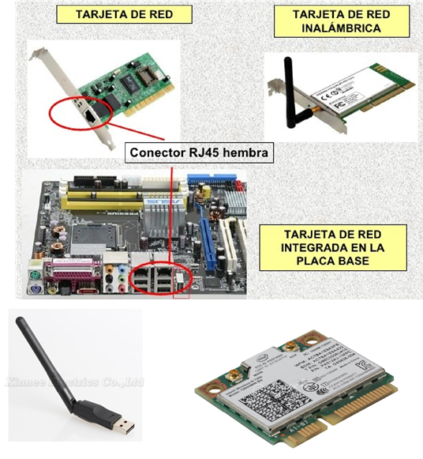
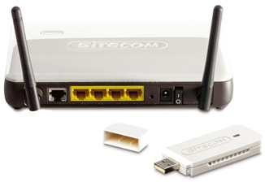
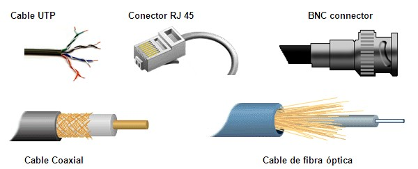
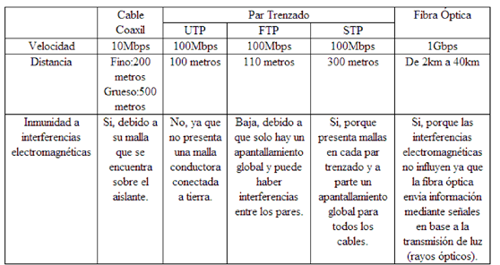
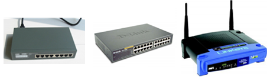
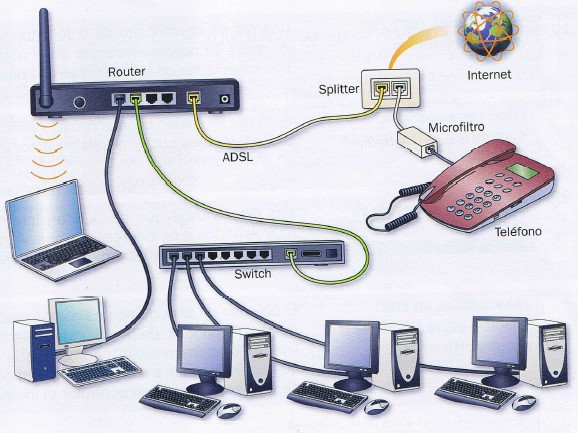

Tarjetas de red:
Son los dispositivos a través de los cuales se envía información entre la red y el equipo.
Tenemos los siguientes tipos:
- PCI para cable (Ethernet). Se conecta a la placa base.
- PCI inalámbrica (Wireless PCI). Se conecta a la placa base.
- USB Inalámbrica (Wireless USB). Se conecta por USB.
- MiniPCI inalámbrica. Para portátiles.

Routers:
Son los dispositivos que conectan redes diferentes de ordenadores. Por ejemplo una red LAN con Internet.
Tenemos los siguientes tipos:
- Router con cables.
- Router inalámbrico.
- Modem-USB.

Cables de red:
Conectan los dispositivos de red entre sí de forma alámbrica. Son el el canal físico por el que se transmiten los datos.
Pueden ser:
- Cable coaxial: Es similar al de la antena de la televisión. Usa el conector BNC.
- Par trenzado: Es parecido al cable telefónico. Consta de 8 hilos conductores trenzados. usa un conector tipo RJ-45.
- Fibra óptica: La información se envía en forma de haz de luz a gran velocidad.


Dispositivos para comunicar varios equipos de una misma red entre sí:
- Hub: La información que recibe es enviada a todos los puertos.
- Switch: La información que recibe sólo es enviada al puerto del dispositivo de destino.
- Punto de acceso: Funciona igual que un switch pero envía la información por wifi.

Servidor web:
Un servidor web es un programa que se ejecuta continuamente en un computador, manteniéndose a la espera de peticiones de ejecución que le hará un cliente o un usuario de Internet. El servidor web se encarga de contestar a estas peticiones de forma adecuada, entregando como resultado una página web o información de todo tipo de acuerdo a los comandos solicitados. En este punto es necesario aclarar lo siguiente: mientras que comúnmente se utiliza la palabra servidor para referirnos a una computadora con un software servidor instalado, en estricto rigor un servidor es el software que permite la realización de las funciones descritas.
El servidor vendría a ser la "casa" ( host o alojamiento) de los sitios que visitamos en la Internet. Los sitios se alojan en computadores con servidores instalados, y cuando un usuario los visita son estas computadoras las que proporcionan al usuario la interacción con el sitio en cuestión. Cuando se contrata un plan de alojamiento web con una compañía, esta última proporciona un servidor al dueño del sitio para poder alojarlo; al respecto hay dos opciones, optar por un "servidor dedicado", lo que se refiere a una computadora servidora dedicada exclusivamente al sitio del cliente (para aplicaciones de alta demanda), o un "servidor compartido", lo que significa que un mismo servidor (computadora + programa servidos) se usará para varios clientes compartiendo los recursos.
Conexionado de una red ADSL:
En la imagen vemos la forma de conectar los equipos una red con conexión a Internet mediante ADSL. Podemos apreciar que los teléfonos de la linea con ADSL deben disponer de microfiltros para evitar interferencias al hablar.

Funcionamiento de una red:
El funcionamiento de una red no es sencillo, ya que la información se transmite en paquetes desde un ordenador a otro, cumpliendo varios protocolos:
- La información que se desea transmitir se divide en paquetes según protocolo.
- Cada equipo o nodo, tiene una dirección, y la información irá desde el origen hacia el destino.
- La transmisión se realiza a través los medios (cable coaxial, fibra óptica, etc.)
- Toda la información pasa a través de unos niveles, dependiendo del protocolo utilizado, que añaden información de control, reorganización de la información transmitida, fragmentación en tramas, etc.)
- Normalmente, el nodo destino examina todas las tramas que circulan por la red y examina la dirección de destino. Si la información es para él la recoge.
- Dependiendo del protocolo utilizado, el nodo destino puede mandar un mensaje diciendo que se ha recibido la información completa o no.
La tecnología Wi-Fi:
Wi-Fi es un sistema de envío de datos sobre redes computacionales que utiliza ondas de radio. Las redes Wi-Fi operan en una banda de frecuencia de 2,4 GHz con una velocidad de hasta 11 Mbps (para la especificación 802.11b), 54 Mbps (para la 802.11g) y 150 Mbps (para la 802.11n).
La última señal Wi-Fi (802.1AC) llega a alcanzar 450 Mbps en la banda de 2,4 GHz y 450 Mbps en la de 5 GHz. Existen varios dispositivos que permiten interconectar elementos Wi-Fi:
- Los routers Wi-Fi son los que reciben la señal de la línea ofrecida por el operador de telefonía y efectúan el reparto de ésta entre los dispositivos de recepción Wi-Fi que se encuentran a su alcance. Es muy frecuente que el router que suministra el proveedor de Internet a los hogares o a las empresas tenga integrada ya la tecnología Wi-Fi.
- Los puntos de acceso funcionan a modo de emisor remoto, es decir, en lugares donde la señal Wi-Fi del router no tiene sufi ciente radio. También se emplean en instalaciones donde el router no posee esta tecnología y se desea disponer de ella.
Los dispositivos de recepción pueden ser de tres tipos: tarjetas Wi-Fi integradas en las placas base de los ordenadores, tarjetas de red PCI y tarjetas USB.